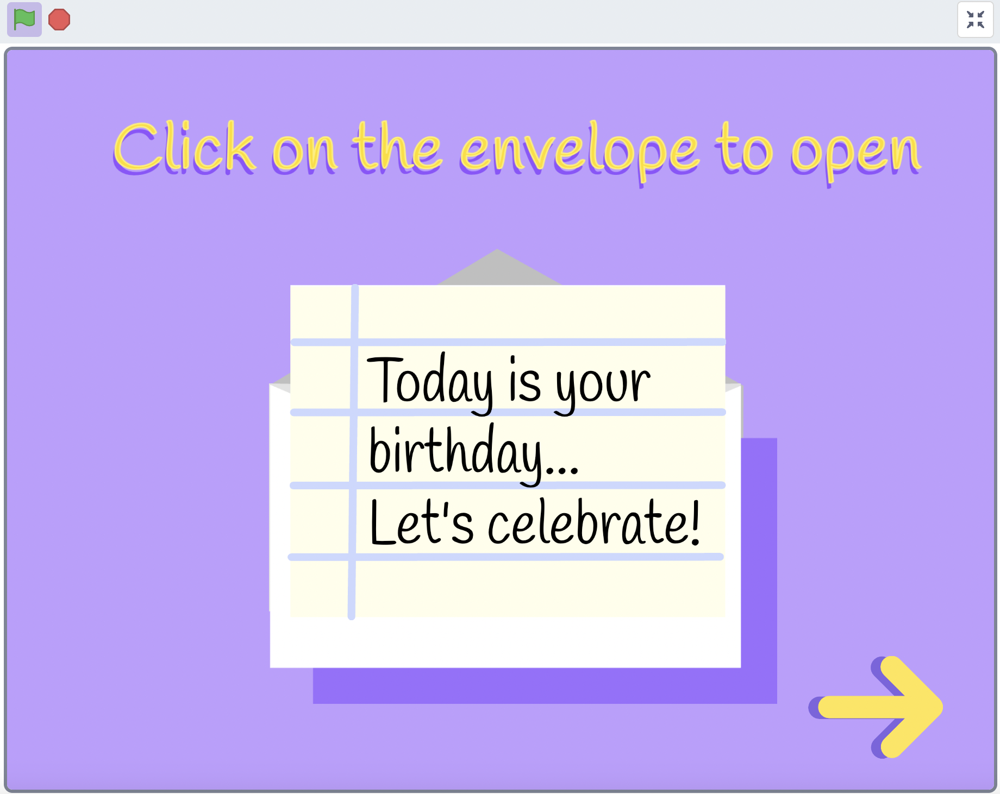
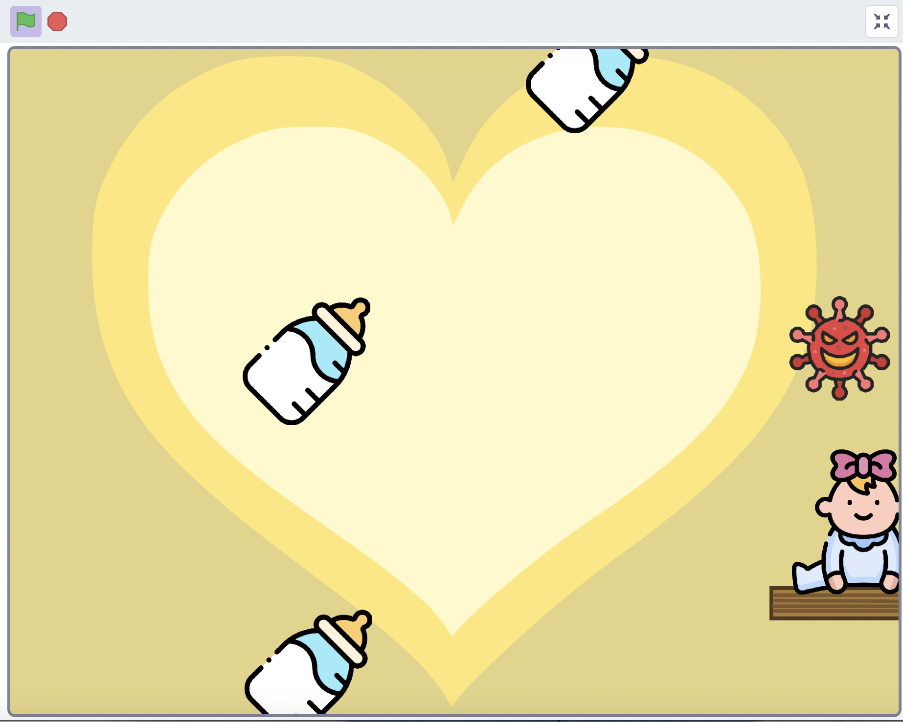
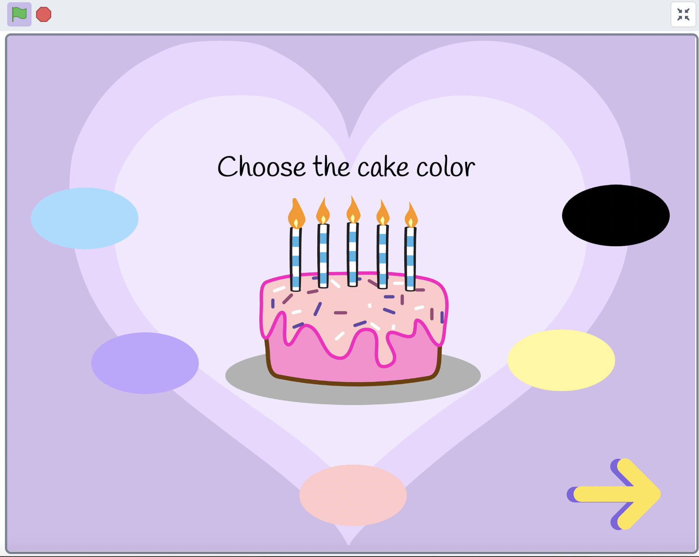

UI/UX, Design Thinking, Prototyping
The Interactive Birthday Card is a fun and engaging digital experience that combines mini-games, personalization, and creativity to celebrate special occasions. Using video sensing technology, the app generates a unique and personalized birthday card that users can play with and share. Created by Carolina Sotério, Yuhan Lu, and Jessica Chen, this project brings joy and interactivity to birthday celebrations.

How the Interactive Birthday Card Works
The Interactive Birthday Card was designed to blend entertainment and personalization. Here’s how it was built:

- Empathize: We observed how people celebrate birthdays and identified a need for more interactive and personalized digital experiences.
- Define: We framed the project around creating a playful, shareable birthday card that users could interact with and customize.
- Ideate: We brainstormed features like mini-games, video sensing, and personalized messages to make the card unique and engaging.
- Prototype: We developed wireframes and interactive prototypes, incorporating user feedback to refine the design.
- Test: The app was tested with users to ensure it was fun, intuitive, and worked seamlessly with video sensing technology.
What Makes It Unique

- Mini-Games: Play fun, quick games that are tied to your life cycle and add a personalized touch to the experience.
- Video Sensing: The app uses video sensing to create a dynamic and interactive card that responds to user movements.
- Personalized Screenshots: At the end of the experience, users can take a screenshot of their unique card to share with friends and family.
How to Use the Interactive Birthday Card

The app is designed to be simple and intuitive. Instructions are displayed on the screen, guiding users through the mini-games and interactions. At the end of the experience, users are prompted to take a screenshot of their personalized birthday card, which they can save or share.
Outcomes
The Interactive Birthday Card has brought smiles to users by offering a unique and memorable way to celebrate birthdays. Its combination of interactivity, personalization, and fun has made it a hit among users of all ages. The project has been praised for its creativity and innovative use of video sensing technology.